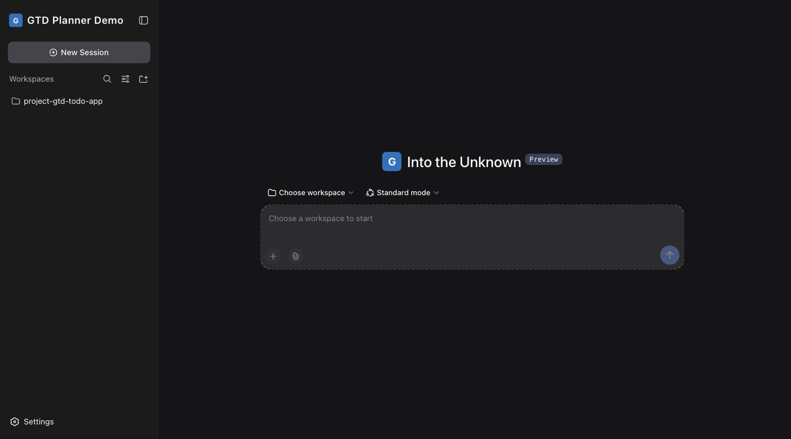

GTD Planner: where it is, and where it could go
Part 1 is acryl-gtd exactly as it runs right now: a tools-only Cordis plugin, same shape as acryl-organizer - you talk to it, it calls tools, the answer comes back as chat text. Part 2 is one way a dedicated GTD workspace view could look, if this toy app is worth growing a real UI for. The GTD buckets throughout (Inbox, Next, Waiting For, Someday/Maybe, Reference, Projects, Calendar) are David Allen's own vocabulary; the visual language (rail, panel, chip system) is ACRYL's own token set, re-tinted to this Blend's actual brand (#1971c2 / #4dabf7).
Part 1: where it is now - a chat, and twelve tools
Real screenshot of the running app (http://127.0.0.1:3741/) before a workspace is chosen, and a reconstructed transcript of what the same screen looks like once you start talking to it. Nothing here is invented UI - it is ACRYL's ordinary chat, with GTD's tool calls in it.
Real: before a session starts

The brand row (acryl-brand, configured in blend.yaml) sets the mark, name and accent. Everything else is the Blank Blueprint's own chat shell.
What a GTD session actually looks like
A capture, an inbox check, and a triage decision - three of the twelve tools in examples/acryl-gtd/index.js, called exactly as the transcript on the right shows.
Get this out of my head: renew my passport, due Oct 15. Also need to call the dentist, and I want to learn to sail someday. Oh, and file the espresso machine's warranty card.
Got all four into your inbox. Want to triage them now?
Yes - passport is a next action for my Travel project, dentist call is waiting on them to call back, sailing is someday, and the warranty card is reference.
Inbox is empty. One next action, one thing you're waiting on, one someday, one reference item filed.
Every tool, and the bucket it touches
| Tool | GTD step | Data |
|---|---|---|
gtd_capture | Capture - get it out of your head | New item, status inbox |
gtd_inbox | See what's waiting to be decided | List, status = inbox |
gtd_triage | Clarify + Organize - the one decision | Move to next/waiting/someday/reference/done/trash, optional project + due + tags |
gtd_complete | Engage, finished | status = done |
gtd_next / gtd_waiting / gtd_someday / gtd_reference | Engage - what's actionable right now, per bucket | List by status |
gtd_projects / gtd_project | Reflect - the outcomes in play | Grouped by project, open/done counts |
gtd_agenda / gtd_upcoming | Reflect - what's coming due | Sorted by due |
Part 2: a dedicated workspace, if it's worth building
A structured view on top of the chat, never instead of it: "build from inside" - a chat or PTY with the builder agent - is the main strength of every ACRYL Blends app, from day one, and this mock does not remove it. The bucket rail and list are new; the Builder Agent bar stays anchored under the canvas, always visible, whichever bucket you're looking at. Click a bucket on the left to switch the list above the agent bar.
Next Actions
+ CaptureWhat each part would need
| Area | Status | What it is |
|---|---|---|
| Chat + 12 tools | built | examples/acryl-gtd/, grown from acryl.blank; captured as a Blend, published as a registry Blueprint. |
| Builder agent bar (chat/PTY) | kept | Not removed. It is ACRYL's core promise - every Blend can be built and rebuilt by talking to it, from inside itself - so it stays anchored under the canvas in every bucket, exactly the composer the plain Blank app already has. |
| Bucket rail + list panel | proposed | A client tab type reading the same .acryl/gtd.json the tools write - no new data model, just a view over it (the whole point of ACRYL's tool-first design: the UI is optional, the data isn't tool-shaped). |
| Inline triage buttons | proposed | A click calls the same gtd_triage tool the agent calls; no separate "UI logic" to keep in sync. |
| Calendar strip | proposed | Renders gtd_upcoming's output as a week strip instead of text. |
| Projects view | proposed | Renders gtd_projects as progress cards instead of a text list. |
Decisions
1. Is a dedicated UI worth it at all? resolved
Yes, on top of the chat, never in place of it (owner feedback, 2026-09-28): every ACRYL Blend keeps its builder agent as the anchor - "build from inside," "build agentic apps from day one" - so the bucket rail and list only add faster scanning and one-click triage; they cannot replace the chat that built them.
2. If yes, where does it live?
A workspace tab type (like the reference page's acryl-tab-diff pattern) so it opens from + in the advanced shell, or a standalone panel inside acryl-gtd itself that any surface can mount. The tab-type route reuses more of what's already built for spec 040.
3. Contexts (@calls, @errands) - filter or ignore? built
Built as a chip filter in the List view (owner approved 2026-09-28): click a tag to show only items carrying it, click again to clear. Client-side, no extra Host round trip.
4. Board view (mindwtr's swimlanes)? built
Built (owner approved 2026-09-28): kanban columns per bucket, one card per item. Click-to-move, not drag-and-drop - moving a card calls the same Host route the list's inline triage buttons call.